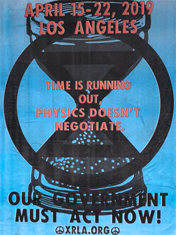
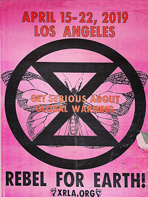

Extinction Rebellion is a socio-political movement which uses nonviolent resistance to protest against climate breakdown, biodiversity loss, and the risk of human extinction and ecological collapse.
Extinction Rebellion is an international movement that uses non-violent civil disobedience to achieve radical change in order to minimise the risk of human extinction and ecological collapse.
On 31st October 2018, we assembled on Parliament Square in London to announce a Declaration of Rebellion against the UK Government. We were expecting a couple of hundred people. Instead, 1500 came to participate in peaceful civil disobedience. The energy was contagious!
The next few weeks were a whirlwind. Six thousand of us converged on London to peacefully block five major bridges across the Thames. We planted trees in the middle of Parliament Square, and dug a hole there to bury a coffin representing our future. We super-glued ourselves to the gates of Buckingham Palace as we read a letter to the Queen.
Our actions generated huge national and international publicity and, as news spread, our ideas connected with tens of thousands of people around the world. The XR project was resonating with a deeply felt need for community and solidarity.
We are the ones we’ve been waiting for,we chanted!
Dozens of countries now have groups springing up, from the Solomon Islands to Australia, from Spain to South Africa, the US to India.
So what’s next? We are working relentlessly, building our movement in preparation for phase two, an international rebellion that will begin on 15th April 2019. So come and join us. Rebel for life. For the planet. For our children’s children’s futures. There is so much work to be done.
At the core of Extinction Rebellion’s philosophy is nonviolent civil disobedience. We promote civil disobedience and rebellion because we think it is necessary- we are asking people to find their courage and to collectively do what is necessary to bring about change.
We organise in small groups. These groups are connected in a complex web that is constantly evolving as we grow and learn. We are working to build a movement that is participatory, decentralised, and inclusive.
Human activity is causing irreparable harm to the life on this world. A mass extinction event, only the sixth in roughly 540 million years, is underway. Many current life forms could be annihilated or at least committed to extinction by the end of this century.
The air we breathe, the water we drink, the earth we plant in, the food we eat, and the beauty and diversity of nature that nourishes our psychological well-being, all are being corrupted and compromised by the political and economic systems that promote and support our modern, consumer-focussed lifestyles.
We must act while we still can. What we are seeing now is nothing compared to what could come.
Effects on global human society, if the climate and ecological emergency is not addressed, may spiral out of control.
- Sea level rise
- Desertification
- Wildfires
- Water shortage
- Crop failure
- Extreme weather
- Millions displaced
- Disease
- Increased risk of wars and conflicts
But our leaders are failing in their duty to act on our behalf. Our current systems of governance is compromised by a focus on profits and economic growth. Politicians can be influenced by lobbies of powerful corporations and the media are hampered by vested interest of corporate advertisers undermining our democratic values.
We have run out of the luxury of time to react incrementally..
We must radically and immediately begin reducing emissions and improving carbon absorption, drawing it down and locking it up again.
Only a peaceful planet-wide mobilisation of the scale of World War II will give us a chance to avoid the worst case scenarios and restore a safe climate
The task before us is daunting but big changes have happened before.
Let’s make a better world.
Looking at the UK for example, the 2016 State
of Nature report found that they were “among the most
nature-depleted countries in the world”. One
in five British mammals
Globally species are going extinct at rates up to 1,000 times the background rates typical of Earth’s past. The direct causes of biodiversity loss being habitat change, overexploitation, the introduction of invasive alien species, nutrient loading and climate change.
The average rate of vertebrate species loss over the last century is up to 100 times higher than the background rate. The total number of vertebrate species that went extinct in the last century would have taken about 800 to 10,000 years to disappear if the background rate had prevailed.
The latest Living Planet Index shows an average decline of 60% in population sizes of thousands of vertebrate species around the world between 1970 and 2014.
More than a quarter of the assessed species (around 100,000) are threatened with extinction. That is 40% of all amphibians, 25% of all mammals, 34% of all conifers, 14% of all birds, 33% of reef-building corals, 31% of sharks and rays.
Corals reefs are suffering mass die-offs from heat stress. These events are becoming much more common with back to back die-offs on the Great Barrier Reef in Australia in 2016 and 2017. The predictions are that at even at 2C of warming these heat waves will occur on an annual basis.
“20 years from now, every summer will be too hot for corals: they will disappear as dominant members of tropical reef systems by 2040-2050. It’s hard to argue it any other way.” – Prof. Ove Hoegh-Guldberg directs the Global Change Institute at the University of Queensland.
Insect die-off
Catastrophic reductions in global insect populations have profound consequences for ecological food chains and human crop pollination.
There
is strong evidence that many insect populations are under
serious threat and are declining in many places across the globe.
Multiple pressures might include habitat loss, agro-chemical
pollutants, invasive species
A 27-year long population monitoring
study in Germany revealed a dramatic 76% decline in flying
insect biomass.
And a new study by Dutch scientists found
that Butterfly numbers had fallen
by over 80% in the last 130 years. With the authors concluding
that “industrial
agriculture is simply leaving hardly any room for nature.”
Food
One of the world’s leading medical journals, The Lancet, carried out a major review which concluded that climate changed posed “the biggest global health threat of the 21st century” because of both the direct impacts of extreme weather events and the indirect disruption to the social and ecological systems that sustain us.
Food insecurity
More frequent and severe water extremes, including droughts and floods, impact agricultural production, while rising temperatures translate into increased water demand in agriculture sectors.
“We have already observed impacts of climate change on agriculture. We have assessed the amount of climate change we can adapt to. There’s a lot we can’t adapt to even at 2ºC. At 4ºC the impacts are very high and we cannot adapt to them” – Dr. Rachel Warren, University of East Anglia
The number of extreme climate-related disasters, including extreme heat, droughts, floods and storms, has doubled since the early 1990s, with an average of 213 of these events occurring every year during the period of 1990–2016. These harm agricultural productivity contributing to shortfalls in food availability, with knock-on effects causing food price hikes and income losses that reduce people’s access to food.
People across 51 countries and territories facing crisis levels of acute food insecurity or worse, requiring immediate emergency action
- 2015: 80 million people
- 2016: 108 million people
- 2017: 124 million people
Risk of extreme weather hitting several major food producing regions of the world at the same time could triple by 2040 (1 in 100 year event to 1 in 30).
A recent study looking at the impact of climate change on food production for the top four maize-exporting countries, which currently account for over 85% of global maize exports, found that “the probability that they have simultaneous production losses greater than 10% in any given year is presently virtually zero, but it increases to 7% under 2°C warming and 86% under 4°C warming “
Water
Drought and Scarcity
Water withdrawals grew at almost twice the rate of population increase in the twentieth century.
The global water cycle is intensifying due to climate change, with wetter regions generally becoming wetter and drier regions becoming even drier. A 2018 UN report highlights that at present, an estimated 3.6 billion people (nearly half the global population) live in areas that are potentially water-scarce at least one month per year, and this population could increase to some 4.8–5.7 billion by 2050.
Rising temperatures will melt at least one-third of the Himalayas’ glaciers by the end of the century even if we limit the temperature rise to 1.5°C. Melting glaciers in both the Andes and the Himalayas threatens the water supplies of hundreds of millions people living downstream.
A severe drought in Cape Town in 2018 led to severe water restrictions being put in place. The city came to within just days of turning off its water supply – dubbed ‘Day Zero’. Climate scientists have now calculated that climate change has already made a drought this severity go from a one in 300 year event to being a one in a hundred year event. At 2°C of warming a drought of this severity will happen roughly once every 33 years.
Rising Seas
Sea level is rising faster in recent decades. Sea level rise is caused primarily by two factors related to global warming: the added water from melting ice sheets and glaciers and the expansion of seawater as it warms. Sea level rises will cause inundation of low lying land, islands and coastal cities globally.
As sea level rises higher over the next 15 to 30 years, tidal flooding is expected to occur much more often, causing severe disruption to coastal communities, and even rendering some areas unusable — all within the time frame of a typical home mortgage.
2°C warming would threaten to inundate areas now occupied by 130 million people while increase to 4°C could lock in enough eventual sea level rise to submerge land currently home to 470 to 760 million people globally.
The land ice sheets in both Antarctica and Greenland have been losing mass since 2002. Both ice sheets have seen an acceleration of ice mass loss since 2009. Antarctica is losing six times more ice mass annually now than 40 years ago.
In 2014 a team from NASA found that part of the West Antarctic ice sheet had already begun what they described as an “unstoppable” collapse, locking in at least a meter of sea level rise. If we continue warming we will trigger the collapse of more sectors of the ice-sheets.
“Sea level is rising much faster and Arctic sea ice cover shrinking more rapidly than we previously expected. Unfortunately, the data now show us that we have underestimated the climate crisis in the past.” Stefan Rahmstorf, Professor of Physics of the the Oceans
Ocean Acidification
The oceans are already become 30% more acidic, as carbon dioxide from the burning of fossil fuels dissolves it alters the chemistry of the sea water. On our current emission trajectory, in 2100, the pH increase of the ocean will see a 150% increase in acidity! This will affect marine life from shellfish to whole coral reef communities by removing needed minerals that they use to grow their shells. The oceanic conditions will be unlike marine ecosystems have experienced for the last 14 million years
Present ocean acidification is occurring approximately ten times faster than anything experienced during the last 300 million years, jeopardising the ability of ocean systems to adapt.
Sea ice
Arctic sea ice is now declining at a rate of 12.8 percent per decade.
Summer Arctic sea ice is predicted
to disappear almost completely by the middle of this
century.
“We may lose the summer ice cover as early as 2030. This is in
itself much earlier than projections from nearly all climate model
simulations.” – Prof.
Mark Serreze
Director of the National Snow and Ice Data
Centre
Scientists are now investigating connections between the huge changes we have seen in the Arctic and changes to the jet stream resulting in increasingly dramatic impacts on extreme weather events at lower latitudes.
Pollution
All forms of pollution were responsible in 2015 for an estimated 9 million premature deaths—16% of all deaths worldwide—as well as for 268 million disability-adjusted life-years. Pollution is thus the world’s largest environmental cause of disease and premature death
As the world gets hotter and more crowded, our engines continue to
pump out dirty emissions, and half the world has no access to clean
fuels or technologies (e.g. stoves, lamps), the very air we breathe
is growing dangerously polluted: nine
out of ten people now breathe polluted air, which kills 7
million people every year. (Ambient
air pollution: 4.2 million deaths; household air pollution: 2.8
million deaths)
Nitrate from agriculture is now the most common chemical
contaminant in the world’s groundwater aquifers. These
pollutants can also dramatically affect aquatic ecosystems, for
example, through eutrophication caused by the accumulation of
nutrients in lakes and coastal waters impacts biodiversity and
fisheries. Ocean dead zones with zero oxygen have
quadrupled in size since 1950, suffocating the organisms that
live in those areas.
Earth
We’re losing our soil
More than 95% of what we eat comes from soil. It takes about 500 years to form 2.5 cm of top soil under normal agricultural condition.
Soil erosion and degradation has been increased dramatically by the human activities of deforestation for agriculture, overgrazing and use of agrochemicals.
50% of the planet’s topsoil has been lost in the last 150 years, leading to increased pollution, flooding and desertification. Desertification itself currently affects more than 2.7 billion people
By
2050, land degradation and climate change together are
predicted to reduce crop yields by an average of 10 per cent
globally and up to 50 per cent in certain regions.
Earthworms
cannot compensate for the loss of top soil as they too are being
depleted by 80% or more from intensive agrichemical fields.
Several species of worms are extinct and many others are likely
heading that way.